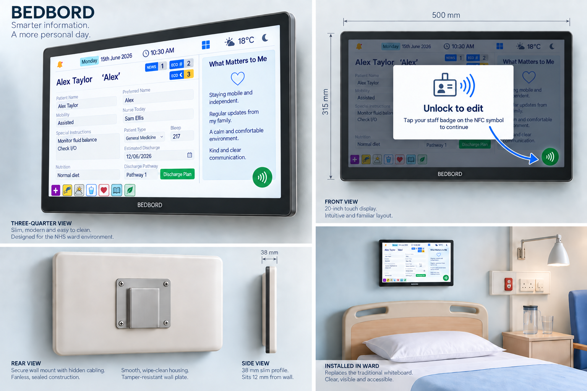
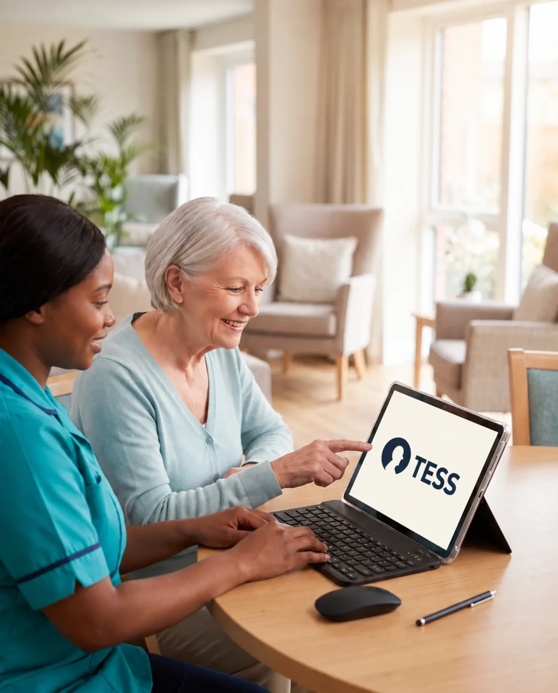

Clarity at the bedsideBedbord
Move beyond the handwritten whiteboard. Bring useful bedside information and what matters to the person into one clear view.
Discover BedbordHuman-centred digital healthcare
Clearer information. Meaningful connection.
Technology that makes room for both.
Two products. One purpose.
Designed around the people receiving care, and the people who make it possible.

Clarity at the bedsideMove beyond the handwritten whiteboard. Bring useful bedside information and what matters to the person into one clear view.
Discover Bedbord Connection in everyday care
Connection in everyday care
A familiar song. A shared story. A new conversation. Make more space for meaningful engagement with an approachable tablet experience.
Discover TESSThe thinking behind TruSelv
Being seen. Understanding what’s happening. Choosing something you enjoy.
These small things shape the experience of care. TruSelv develops digital tools that help make them part of the everyday, from a clearer bedside view to an activity shared with someone who knows you.
Bedbord and TESS bring that purpose to life in two different, complementary ways.
Built around real life
See useful information, express preferences and take part in the day in a way that feels comfortable.
Explore practical ways to simplify bedside communication and make shared activities easier to offer.
Find a starting point for conversation, shared memories and a more personal care experience.

Meet TESS
Something to listen to.
Something to talk about.
Something to enjoy together.
TESS brings communication, entertainment, games, reminiscence and radio together in a welcoming tablet experience.
Illustrative care-setting imagery.
Our approach to safety, privacy and responsible implementation.
A conversation is a good start
Let’s explore what Bedbord and TESS could bring to your setting.